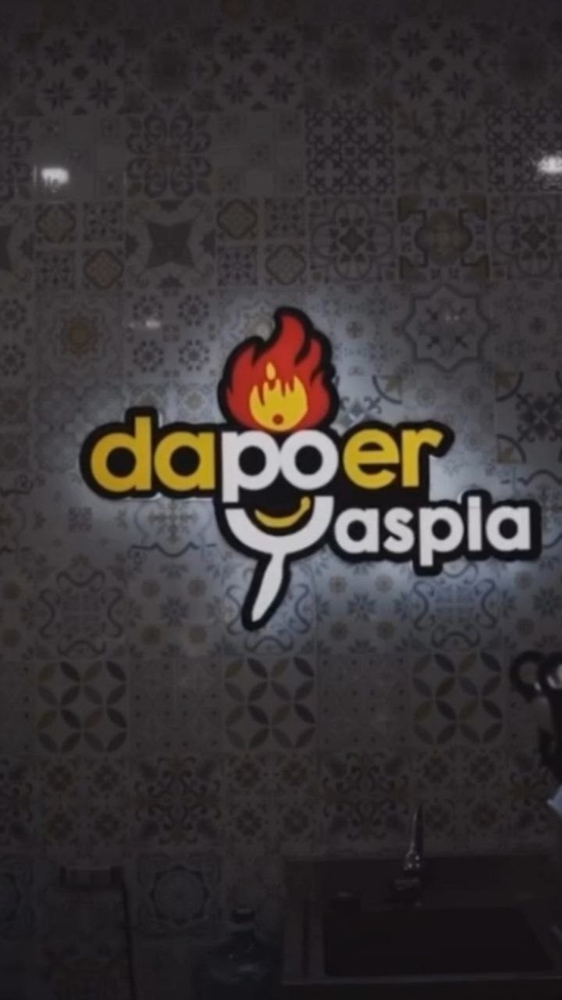
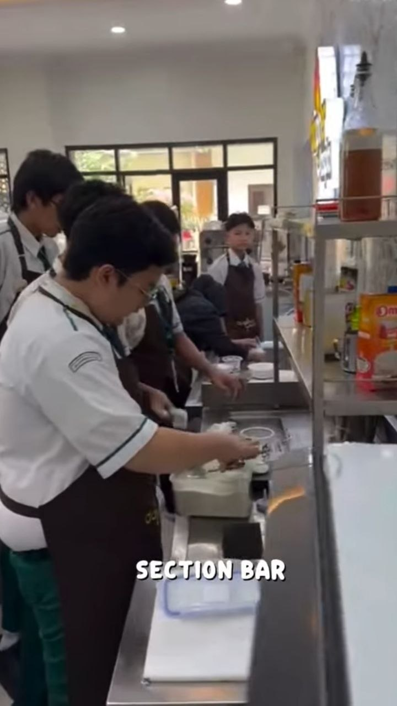
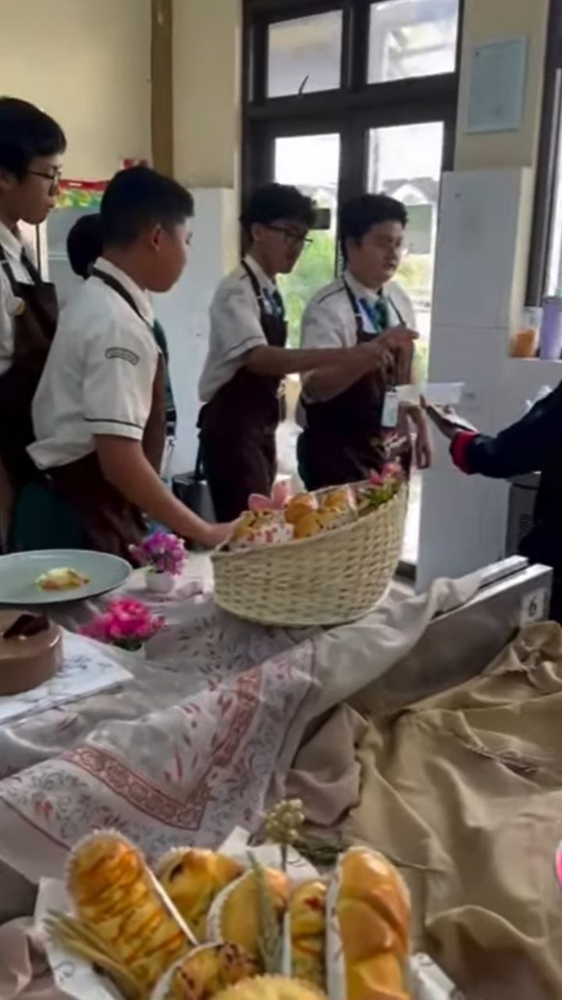

Karya Nyata dari Proses Belajar
Website ini merupakan media pendukung untuk menampilkan hasil Ujian Praktik Terintegrasi. Konten utama pada website ini adalah video broadcasting pembelajaran yang berisi penyampaian teks argumentasi secara lisan.
Website ini merupakan website portofolio digital yang berisi hasil karya dan pembelajaran saya selama mengikuti Ujian Praktik Terintegrasi.
Tujuan pembuatan website ini adalah untuk menampilkan karya yang telah saya buat serta melatih kemampuan saya dalam membuat website sederhana menggunakan HTML.
Saya memilih topik argumentasi tentang manfaat Intership Curriculum di Dapoer Yaspia karena topik ini berkaitan langsung dengan pengalaman yang saya alami saat mengikuti program tersebut
Saya harap penonton dari video yang telah saya buat akan lebih tertarik dengan Intership Curriculum
Selama ujian praktik ini dan belajar di kelas IX, saya belajar bahwa pengalaman langsung seperti Internship Curriculum memberi banyak pelajaran yang tidak selalu didapat di kelas, seperti tanggung jawab, kerja sama, dan komunikasi. Saya merasa senang bisa belajar di SMPIT Al Haraki karena mendapatkan banyak pengalaman baru. Pesan saya, semoga sekolah terus mempertahankan program yang bermanfaat ini dan semakin berkembang ke depannya.


